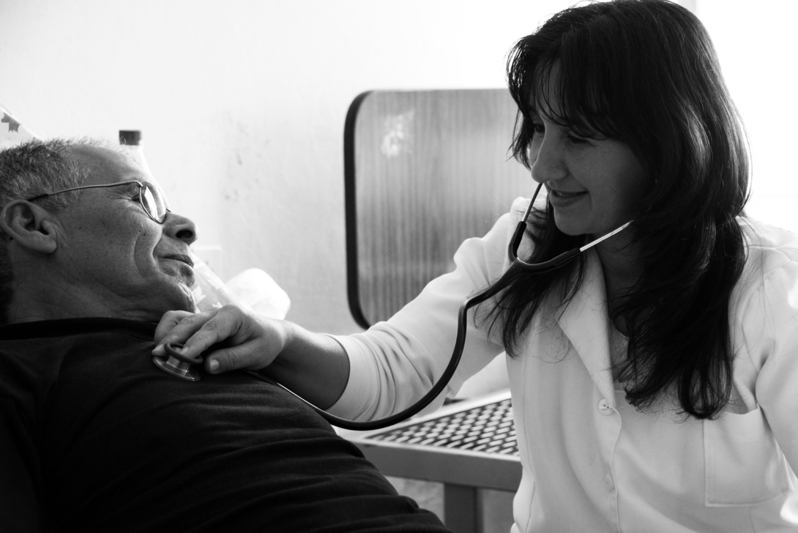
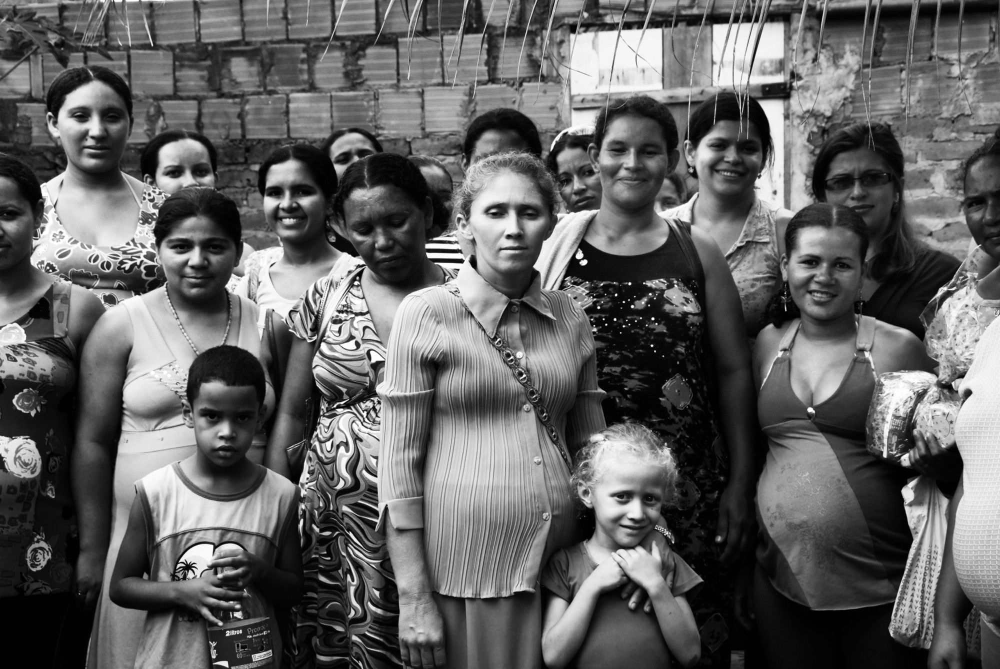
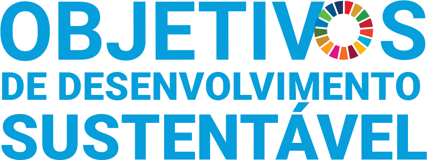
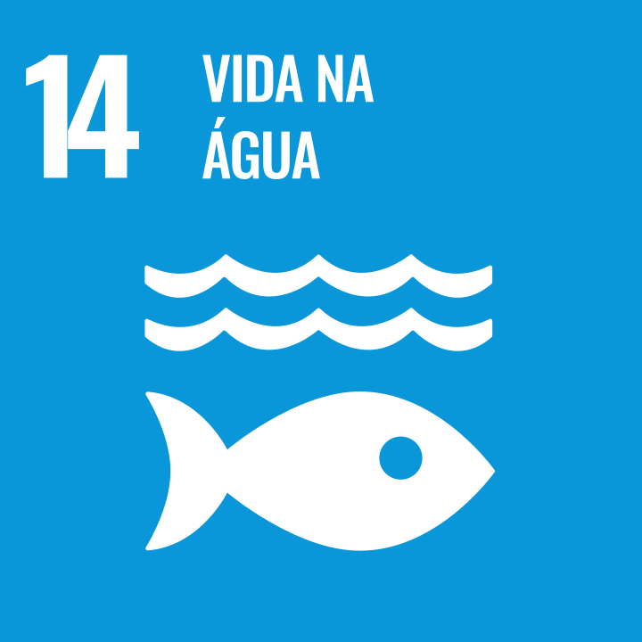

Cuidamos dos Funcionários Públicos para um Território Transformado
 :
a Rede da Saúde Mental Coletiva para as Políticas Públicas do futuro.
:
a Rede da Saúde Mental Coletiva para as Políticas Públicas do futuro.
Cuidado em Saúde Mental, Integração para a Rede e Treinamentos para as equipes do Município.
- 2 em cada 5 professores
- 1 em cada 3 agentes comunitários
- 1 em cada 5 médicos
Imagem ilustrativa e modificada, baseada em fotografia real do fotógrafo Éttore de Maio.
Quando a equipe está no limite, mas nada muda:
veja o que pesquisas apontam


A rede pública cuida da população.
A gente cuida da rede.
Postinho, CRAS, CREAS, CAPS, Escola formam a rede de cuidado do seu município. A PAAPS treina as equipes, cuida da saúde mental de quem atende e faz os serviços conversarem entre si.
Foto: Radilson Carlos Gomes, fotógrafo do SUS.
Escolher o é mover o município inteiro.
Impactamos diretamente 8 dos

Estabelecidos pela ONU.
Impacto direto:


Impacto indireto:





Cuidado em Saúde Mental+Integração de Rede
O que a sua equipe precisa? Cuidado, quando a equipe está adoecida, ou Integração de Rede, quando os serviços não conversam?
Ver o que incluiPsicoterapia online pro servidor · Plantão psicológico nas unidades · Grupos de apoio · Acordos e fluxo entre as equipes
Entenda como atuamos
Treinamentos PAAPS
Traz o conhecimento que a sua realidade de fato precisa. Sala de aula com caso real e exercício real: a equipe não sai igual, e o que foi aprendido continua sendo vivido depois que o treinamento acaba.
Ver o que incluiFluxo e matriciamento · Comunicação de equipe · RAPS e reforma psiquiátrica · Saúde da mulher · Saúde da população negra · NR-1 e saúde mental no trabalho
Mais sobre Treinamentos
Urgências e
Eventos Extremos
Em eventos extremos ligados ao clima, enchentes, acidentes e violências que atingem um território inteiro. A equipe entra em pronta resposta, organiza a estratégia com a gestão e treina a equipe local, para que o município siga de pé.
Ver o que incluiPronta resposta · Estratégia com a gestão · Treinamento da equipe local · Condução da implementação
Conheça esse serviço
Sigilo e ética
O PAAPS é uma metodologia proprietária. Como profissionais da Psicologia e em respeito ao Código de Ética da profissão, a Transparência é um valor que atravessa toda a nossa empresa: sigilo nos atendimentos, e clientes; transparência no método, e prestação de contas.
Documentado do início ao fim: nosso registro e histórico de todos os projetos são completos e seguros dentro da Lei Geral de Proteção de Dados (LGPD).
Consultores com +25 anos de Carreira Executiva.
Professores PAAPS com mestrado ou doutorado, ou em processo de.
Psicólogas e psicólogos formados na metodologia da casa, antes de ir a campo, e em formação continuada.
Refazenda Rio Xopotó, Desterro do Melo (MG), 2024.
Quem faz a PAAPS acontecer
-
 Mallu Vasconcellos
Mallu Vasconcellos Uma psicossocióloga que constrói o re-desenho da Saúde Mental Coletiva no Brasil.
Mallu Vasconcellos
Mallu Vasconcellos Uma psicossocióloga que constrói o re-desenho da Saúde Mental Coletiva no Brasil.Em 2024, me mudei de São Paulo Capital, após ter passado por uma das melhores universidades da América Latina (PUC-SP), para uma pequena cidade de menos de 3 mil habitantes, no interior de Minas Gerais. Aprendi de dentro sobre como a Rede chega às mais remotas casas, e me encantei. Ao mesmo tempo que me preocupei com meus colegas de profissão.
Antes, trabalhei com Mulheres vítimas de Racismo no Ministério Público, Cuidados Paliativos, no Sistema Socioeducativo e com crianças vítimas de exploração e violência sexual.
Decidi ali que o propósito da minha vida seria transformar a Rede Pública de Cuidado em um espaço realizador de se trabalhar - e a melhor maneira de fazer isso, é cuidando de quem cuida. Assim nasce a PAAPS Brasil.
-
 Gustavo Faria
Gustavo Faria Para transformar sistemas grandes devemos começar com pequenas mudanças nas relações.
Gustavo Faria
Gustavo Faria Para transformar sistemas grandes devemos começar com pequenas mudanças nas relações.Meu trabalho é construir e sustentar redes que têm vida própria e que mantêm um relacionamento real com a empresa e a marca.
Mantenho relacionamento de médio e longo prazo, porque acredito que vínculo saudável não se constrói da noite pro dia, leva tempo e cuidado para ficar de pé.
Na PAAPS, contribuo ativamente para a articulação da proposta em linguagem que alcance além do meio acadêmico. Conduzo conexões com pessoas e organizações que ampliaram o alcance do projeto.
-
 Fabiane Vasconcellos
Fabiane Vasconcellos Desenho intervenções em times para que conversas floresçam.
Fabiane Vasconcellos
Fabiane Vasconcellos Desenho intervenções em times para que conversas floresçam.Após 25 anos na área de planejamento estratégico vivendo os dilemas de liderança na pele, nos últimos 12 anos escolhi desenvolver lideranças e times para buscarem uma relação de maior realização e bem-estar com o trabalho.
Com mais de 250 mentorados ao longo dessa jornada, hoje no PAAPS atuo como Psicanalista de Grupos, Mediadora de Conflitos e Facilitadora de Diálogo, conduzindo intervenções em times, e criando espaço para conversas generativas e para que sonhos coletivos floresçam.
-
 Gabriela Diniz
Gabriela Diniz Transformo teatro em ferramenta de desenvolvimento e vínculo.
Gabriela Diniz
Gabriela Diniz Transformo teatro em ferramenta de desenvolvimento e vínculo.Sou psicóloga e atriz há doze anos e criei o TEAtrar para potencializar a expressão e desenvolvimento de pessoas neurodivergentes e colocá-las em cena junto com as neurotípicas. Tudo através da arte.
Na PAAPS eu concretizo experiências que juntam arte e ciência para fortalecer o vínculo entre quem cuida e quem é cuidado.
-
 Lucas Pimenta
Lucas Pimenta Sou o Psicólogo que cunhou o conceito do "Avesso da Clínica".
Lucas Pimenta
Lucas Pimenta Sou o Psicólogo que cunhou o conceito do "Avesso da Clínica".Minha trajetória e minha Psicologia sempre foram no e do território. Comecei no Aglomerado da Serra, em Belo Horizonte (MG), e desde então meu trabalho está onde estão as pessoas: escolas, coletivos, plantões. No PAAPS, supervisionei psicólogas em formação no Complexo da Maré, e conduzi grupos com Servidoras no Interior de Minas Gerais.
No Mestrado (UFVJM), pesquiso Saúde Mental Quilombola, com o mesmo compromisso: uma psicologia feita de gente.
+120 membros na nossa comunidade e +500 pessoas no ecossistema
Uma comunidade real de profissionais que acreditam e praticam uma saúde mental, cuidado e transformação social como construções coletivas.
Encontros da comunidade ECOA e da rede PAAPS.

Cuidar da Ponta, Impactar o Mundo
Mas antes, ciência!
O embasamento que sustenta o nosso método. Veja um pouco das nossas referências e entidades que concordam com a linha que seguimos na PAAPS.
-
Pontifícia Universidade Católica de Minas Gerais
Os Saberes das Encruzilhadas e os Servidores Públicos da Linha de Frente
VASCONCELLOS BARBOSA, M. L. Os Saberes das Encruzilhadas e os Servidores Públicos da Linha de Frente. 2026. Trabalho de Conclusão de Curso (Graduação em Psicologia), Pontifícia Universidade Católica de Minas Gerais, Belo Horizonte, 2026.Pesquisa própria, empírica, autorizada e executada no SUAS de Belo Horizonte (MG) e no Hospital do IPSEMG. O que a PAAPS Brasil faz foi registrado e testado em pesquisa real dentro do serviço público. Pesquisa universitária na PUC Minas. -
Conselho Federal de Psicologia, CREPOP
Referências Técnicas para a atuação do psicólogo no CRAS e no SUAS
CONSELHO FEDERAL DE PSICOLOGIA. CREPOP. Referências Técnicas para a atuação do/a psicólogo/a no CRAS/SUAS. Brasília: CFP, 2007.O Conselho Federal de Psicologia já orienta que a saúde mental deve estar também dentro do CRAS, e não só no consultório. Nós estamos no território. -
Organização Mundial da Saúde
World report on violence and health
KRUG, E. G. e outros. World report on violence and health. Genebra: Organização Mundial da Saúde, 2002.A Organização Mundial da Saúde trata violência no trabalho como assunto de saúde. Nós também. O relatório mundial coloca a violência, inclusive a do trabalho, como questão de saúde pública. -
Ipea e Fórum Brasileiro de Segurança Pública
Atlas da Vulnerabilidade Social e Atlas da Violência
IPEA. Atlas da Vulnerabilidade Social nos Municípios Brasileiros. Brasília: Ipea, 2015. CERQUEIRA, D.; BUENO, S. (coord.). Atlas da Violência 2025. Fórum Brasileiro de Segurança Pública. 19º Anuário Brasileiro de Segurança Pública, 2025.O Ipea e o Fórum Brasileiro de Segurança Pública medem, cidade por cidade, quanta violência e quanta pobreza a equipe atende todo dia. Duas cidades do mesmo tamanho podem colocar peso muito diferente sobre a mesma quantidade de gente trabalhando. É por isso que a leitura da rede vem antes da proposta: o mesmo número de servidores não significa a mesma carga. -
Physis e Revista Brasileira de Saúde Ocupacional
Dois estudos revisados por pares sobre o sofrimento na ponta
VIOLÊNCIA relacionada ao trabalho e apropriação da saúde do trabalhador: sofrimento anunciado no Sistema Único de Assistência Social. Physis: Revista de Saúde Coletiva, v. 30, n. 2, e300224, 2020. ALCÂNTARA, M. A.; ASSUNÇÃO, A. A. Influência da organização do trabalho sobre a prevalência de transtornos mentais comuns dos agentes comunitários de saúde de Belo Horizonte. Revista Brasileira de Saúde Ocupacional, v. 41, 2016.Dois estudos revisados por pares sustentam a leitura de que o sofrimento na ponta é produzido pela organização do trabalho.